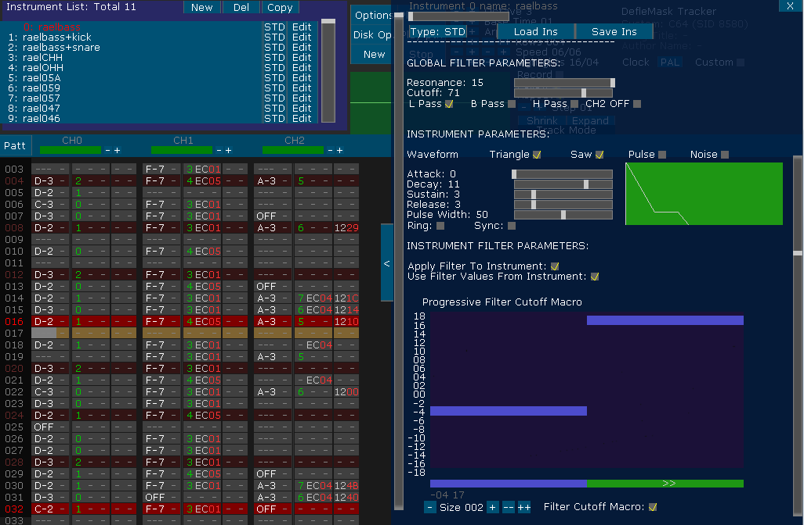

COMMODORE 64 SYSTEM INSTRUMENTS EDITOR MENU: The ATTACK rate determines how rapidly the output of Voice rises from zero to peak amplitude when the Envelope Generator is Gated. The 16 ATTACK rates are listed below in Table 2.
The DECAY cycle follows the ATTACK cycle and the DECAY rate determines how rapidly the output falls from the peak amplitude to the selected SUSTAIN level. The 16 DECAY rates are listed in Table 2.
The SUSTAIN cycle follows the DECAY cycle and the output of Voice will remain at the selected SUSTAIN amplitude as long as the Gate bit remains set. The SUSTAIN levels range from zero to peak amplitude in 16 linear steps, with a SUSTAIN value of 0 selecting zero amplitude and a SUSTAIN value of 15 (#F) selecting the peak amplitude.
A SUSTAIN value of 8 would cause Voice to SUSTAIN at an amplitude one-half the peak amplitude reached by the ATTACK cycle.
The 16 RELEASE rates are identical to the DECAY rates.

You can control the Commodore 64 sound using STD Instruments, you can set a Volume Macro that will control the global volume of the system or change it to control the Filter's cutoff-frequency, an Arpeggio Macro, a Duty Cycle Macro and a Wave Macro.
Regarding to the WAVE Macro, it has 9 values (0-8) and it is a 4bits bitmask (NOISE|PULSE|SAW|TRIANGLE). If you don't know what is a bitmask or you want to have a fast list, this are the values:
0 - No Wave.
1 - Triangle.
2 - Saw.
3 - Triangle + Saw.
4 - Pulse.
5 - Pulse + Triangle.
6 - Pulse + Saw.
7 - Pulse + Triangle + Saw.
8 - Noise.
Regarding to the Arpeggio Macro, it behavior is a little bit complicated when you use 1Axx effect (Reset ADSR), because the reset ADSR uses some frames to reset it, so the Arpeggio will not sound if the time is too short between notes.
The SID/Commodore 64 sound parameters are very complicated and may require lot of time to master them, here is a short explanation of all commands:
Attack/Decay
DefleMask will render the Envelope dinamically, so it should be easy to get what you think.
Attack Rate
Release Rate
DEC
HEX
(Time/Cycle)
(Time/Cycle)
0 (0) 2 mS 6 mS
1 (1) 8 mS 24 mS
2 (2) 16 mS 48 mS
3 (3) 24 mS 72 mS
4 (4) 38 mS 114 mS
5 (5) 56 mS 168 mS
6 (6) 68 mS 204 mS
7 (7) 80 mS 240 mS
8 (8) 100 mS 300 mS
9 (9) 250 mS 750 mS
10 (A) 500 mS 1.5 S
11 (B) 800 mS 2.4 S
12 (C) 1 S 3 S
13 (D) 3 S 9 S
14 (E) 5 S 15 S
15 (F) 8 S 24 S
Sustain/Release
The pulse width resolution allows the width to be smoothly swept with no discernible stepping. Note that the Pulse waveform on Oscillator 1 must be selected in order for the Pulse Width registers to have any audible effect. A value of 0 or 100 in the Pulse Width will produce a constant DC output, while a value of 50 will produce a square wave.
The "SYNC" checkbox, when it is selected, synchronizes the fundamental frequency of Oscillator A with the fundamental frequency of Oscillator B, producing “Hard Sync” effects. Varying the frequency of Oscillator A with respect to Oscillator B produces a wide range of complex harmonic structures at the frequency of Oscillator B. In order for sync to occur Oscillator B must be set to some frequency other than zero but preferably lower than the frequency of Oscillator A.
The "RING" checkbox, when it is selected, replaces the Triangle waveform output of Oscillator A with a “Ring Modulated” combination of Oscillators A and B. Varying the frequency of Oscillator A with respect to Oscillator B produces a wide range of non-harmonic overtone structures for creating bell or gong sounds and for special effects. In order for ring modulation to be audible, the Triangle waveform of Oscillator A must be selected and Oscillator B must be set to some frequency other than zero.
Note: Oscillator A is the current channel used, oscillator B depends of what is the oscillator A. A=1, B=3. A=2, B=1. A=3, B=2.
"Apply Filter To Instrument" checkbox will define if the instrument/channel will be processed by the Commodore 64 filter.
"Use Filter Values From Instrument" checkbox will overwrite the current Global Filter Values, you can set them at the start of the track and do not change them, or use this checkbox to change the filter behavior dynamically. Warning, setting this flag to true and not checking any of the Global filter parameters will, obviously, disable the filter. So any instrument that uses the filter will become inaudible, use with care.
"Filter Cutoff Macro" will, if it is enabled, modify dynamically the Filter Cutoff parameter with the Volume Macro rather than changing the volume of the soundchip. A value greater than 0 will Increment the Cutoff value. If it is unchecked, it will simply modify the volume (remember that the volume command in the Commodore 64 is global).
The Global Filter Parameters will control the Filters of the Commodore 64.
The "Resonance" will make the resonance of a peaking effect which emphasizes frequency components at the Cutoff Frequency of the Filter, causing a sharper sound. There are 16 Resonance settings ranging linearly from no resonance 0 to maximum resonance 15.
The "Cutoff parameter" will change the filter main center of modification, approximate Cutoff Frequency ranges between 30Hz and 10KHz.
H Pass (High Pass), B Pass (Band Pass) and L Pass (Low Pass) are all the types of filters that you can use with the Commodore 64.
With High Pass enabled, all frequency components above the Cutoff are passed unaltered, while all frequency components below the Cutoff are attenuated at a rate of 12 dB/Octave. The High Pass mode produces tinny, buzzy sounds.
With Band Pass enabled, all frequency components above and below the Cutoff are attenuated at a rate of 6 dB/Octave. The Band Pass mode produces thin, open sounds.
With Low Pass enabled, all frequency components below the Filter Cutoff Frequency are passed unaltered, while all frequency components above the Cutoff are attenuated at a rate of 12 dB/Octave. The low Pass mode produces full-bodied sounds.
Note: All of the three filter modes can be used togheter, they are added using subtractive synthesis.
"CH2 OFF", when checked, disconnect the Channel 2 from the direct audio path. Setting Channel 2 to bypass the Filter ("Through The Filter" Unchecked) and checking "CH2 OFF" prevents Channel 2 from reaching the audio output. This allows Channel 2 to be used for modulation purposes without any undesirable output.